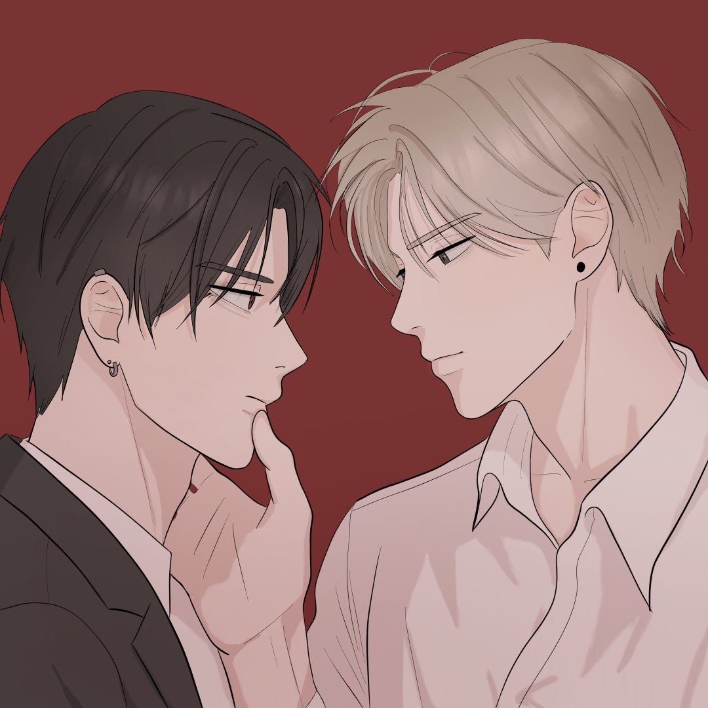

<!DOCTYPE html>
<html lang="pt-br">
<head>
    <meta charset="UTF-8">
    <meta name="viewport" content="width=device-width, initial-scale=1.0">
    <title>Anveyz Subs | Home</title>
    
    <link rel="stylesheet" href="style.css"> 
    
</head>
<body>
    </body>
</html>
<body>

    <header>
        <div class="logo">
            <h1>Anveyz Subs</h1>
        </div>
        
        <nav>
            <ul>
                <li><a href="index.html">Início</a></li>
                <li><a href="#">Projetos Ativos</a></li>
                <li><a href="#">Lançamentos</a></li>
                <li><a href="#">Sobre Nós</a></li>
                <li><a href="#">Contato</a></li>
            </ul>
        </nav>
    </header>

    <main>
        <h2>Novidades em Anveyz Subs</h2>

        <section class="content-grid">
            
            <article class="content-card">
                
                <h3>Stalkers in Love</h3>
                <p>Um quer morrer. O outro se recusa a isso. Quando Kenji vê Nathaniel desabar sem ajudar, deveria ter acabado ali. Mas, em vez disso, começa uma obsessão. Um estuda. Um manipula. Ambos entram em espiral. Quem cairá primeiro?</p>
                <a href="detalhes da obra.html">Ver Detalhes da Obra</a> 
</article>

          
            </section>
    </main>

    <footer>
        <p>&copy; 2024 Anveyz Subs. Todos os direitos reservados.</p>
    
        </div>
    </footer>

</body>

</html>
